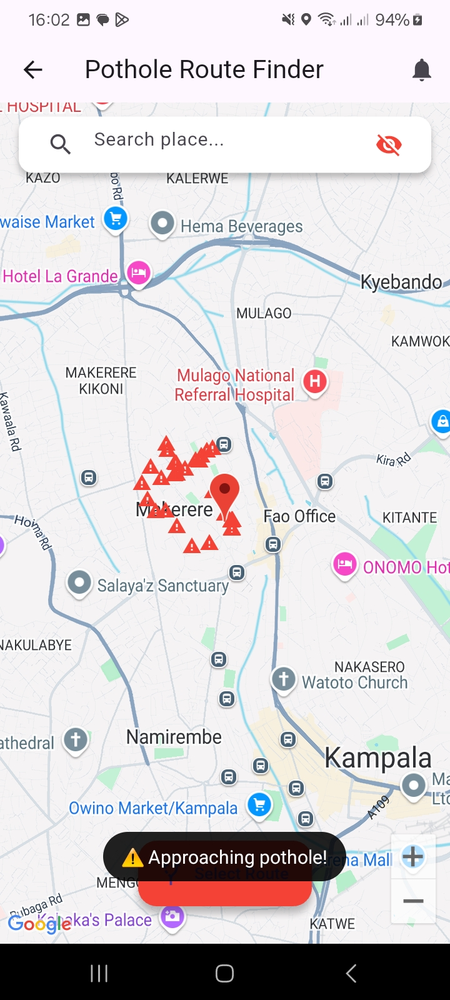
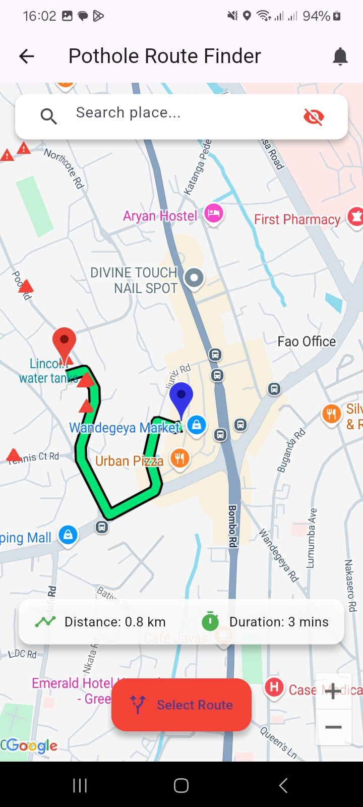
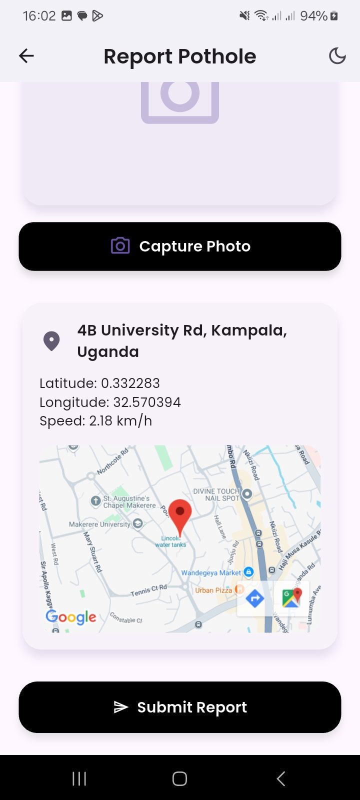
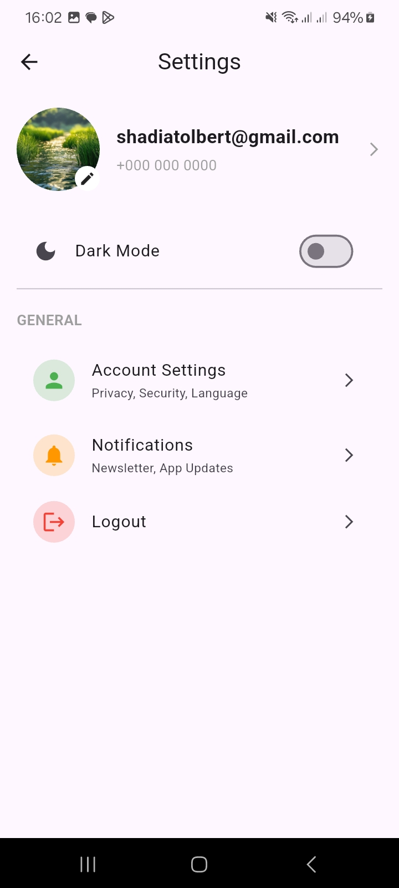

The Pothole Detection and Reporting System is a comprehensive solution that integrates hardware, cloud services, and a mobile application to detect, map, and report potholes in real-time. This page provides an in-depth look at the system's architecture, including its hardware components, software stack, and interactive widgets for exploring system functionality.
The system consists of three primary layers:
- Embedded Detection Unit: An ESP32 microcontroller interfaced with an MPU6050 accelerometer and NEO-6M GPS module to detect potholes and capture geolocation data.
- Cloud Data Management: ThingSpeak stores pothole data, with MATLAB Analysis scripts for automated cleanup, and Firebase handles user authentication.
- Mobile Application: A Flutter-based app with Google Maps integration for visualizing pothole locations and planning safer routes.
Embedded Detection Unit
The embedded unit is the core of pothole detection, utilizing an ESP32 microcontroller to process data from an MPU6050 accelerometer/gyroscope and a NEO-6M GPS module. The MPU6050 detects potholes by identifying z-axis acceleration spikes, while the NEO-6M provides latitude, longitude, and timestamp data. The ESP32 uploads this data to ThingSpeak via Wi-Fi in JSON format.
Cloud Data Management
The cloud layer uses ThingSpeak to store pothole data, including ID, latitude, longitude, timestamp, and status. MATLAB Analysis scripts automate data cleanup, removing records older than 30 days. Firebase Authentication secures user access to the mobile app, ensuring only authorized users can report or update pothole data.
ThingSpeak is an IoT platform that stores pothole data in structured channels. Each entry includes ID, latitude, longitude, timestamp, and status. MATLAB Analysis scripts run periodically to clean up outdated records.
Firebase provides secure user authentication for the Flutter app, ensuring that only registered users can access pothole reporting and route planning features.
Mobile Application
The Flutter-based mobile app integrates with Google Maps API to display pothole locations as markers and supports route planning to avoid hazardous areas. It retrieves data from ThingSpeak via REST APIs and uses Firebase for user authentication. The app is compatible with Android 8.0+ and iOS 12.0+ devices.
Pothole Map Visualization
The map view displays pothole locations as interactive markers, allowing users to tap for details such as timestamp and status.
Route Planning Interface
Users can input destinations and view routes with pothole counts, with the app suggesting the safest path based on pothole density.
Report a Pothole
Users can report potholes they encounter, helping keep the map up to date with real-time road conditions.
User Settings
The settings screen allows users to configure preferences, manage notifications, and update their account details.
Credits: Group 35: Mugole Joel, Suubi Baker Kane, Nalubega Shadiah, Nakitto Rosemary, Nanswa Patricia / Mentor: Dr. Asiimwe Paddy